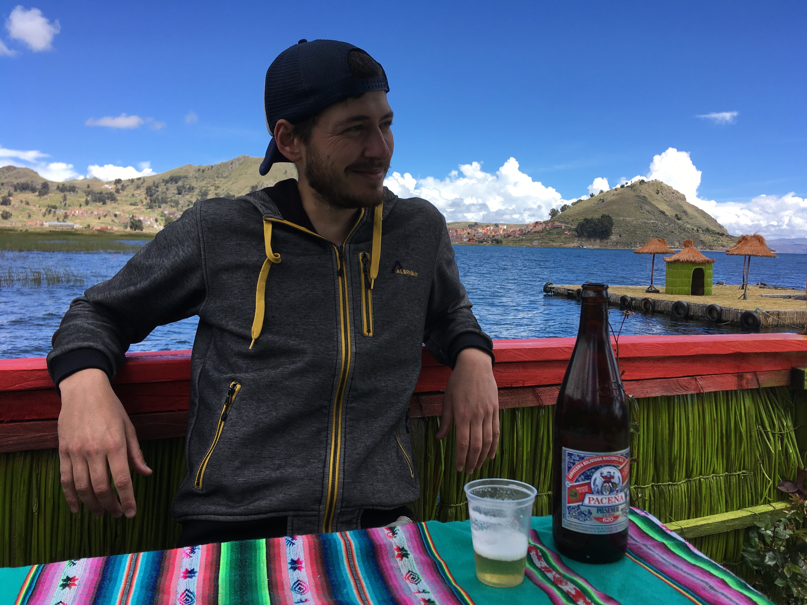

About
I am a cognitive scientist focusing on data science, working for the Vienna Cognitive Science Hub since 2019 as a Senior Scientist. Before that, I was a PhD student at the Central European University, working in the VisionLab.
Research
Currently, I develop computational models that can detect learning in eye-movement patterns and compare gaze patterns of different observers. Furthermore, I am interested in the principles that guide learning and decision-making, and the modeling approaches that can uncover these underlying principles.
I am also involved in many other cognitive science research projects, from birdsongs via auditory cortex clustering to art perception.
Code
I mostly use Python, sometimes R and in the past MatLab. I also use probabilistic programming lanugages for Bayesian modeling (PyMC). Recently, I started to port a book on Bayesian Analysis for Cognitive Science from R to Python
Teaching
Co-seminar leader, BioDataScience in Python and R, Fall 2023
Lecturer and seminar leader, Bayesian Modeling in Python- TEWA 2- Uni Wien Psyhology Master, Spring 2023
Lecturer and seminar leader, Scientific Computing in Python- TEWA 1- Uni Wien Psyhology Master, Spring 2021, Fall 2022
Cognitive Modelling-Advanced Seminar- Uni Wien Psyhology Master Fall 2020
Short bio
2019- Senior Scientist, Vienna Cognitive Science Hub, University of Vienna
2012-18 Cognitive Science PhD, Central European University
2014-15 Visiting Research Fellow, University of Fribourg
2012 Cognitive Science MSc, 2012, Budapest University of Technology
2010 Biology BSc, Eötvös University Budapest
Publications
Contact
jozsef.arato [ a t sign] univie.ac.at